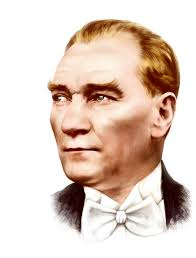

📅19 Mayıs 1919, Türk milletinin kaderini değiştiren en önemli günlerden biridir.
Mustafa Kemal Atatürk, Bandırma Vapuru ile Samsun'a çıkarak Kurtuluş Mücadelesi'ni
başlatmıştır🚢
🗺 Samsun, Türkiye'nin kuzeyinde yer alır ve milli Mücadelenin başladığı şehir olarak
tarihe geçmiştir
Atatürk bu anlamlı günü Türk gençliğe armağan etmiş ve şöyle demiştir
"Ey yükselen yeni nesil! Gelecek Sizindir. Cumhuriyeti biz kurduki onu
yaşatacal sizlersiniz."
🌑 Bandırma Vapuru, sadece bir gemi değil;
Türk milletinin bağımsızlık yolculuğunun simgesidir.
📍 Atatürk ve silah arkadaşları, İstanbul'dan Samsun'a giderek halkı bağımsızlık için bir araya
toplamıştır.
⚽ 19 Mayıs aynı zamanda gençliğin enerjisini, sporun birleştirici gücünü ve vatan sevgisini temsil eder.
🏀 Futbol, basketbol, atletizm ve birçok spor etkinliği bugün büyük coşkuyla kutlanır.
✨ Çünkü güçlü bir gelecek, sağlıklı ve bilinçli gençlerle mümkündür!
"19 Mayıs ruhu; özgürlük, bağımsızlık ve gençlik demektir!"